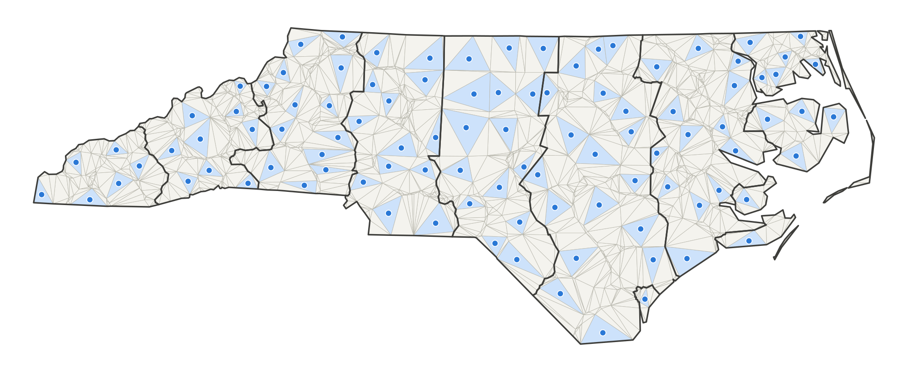
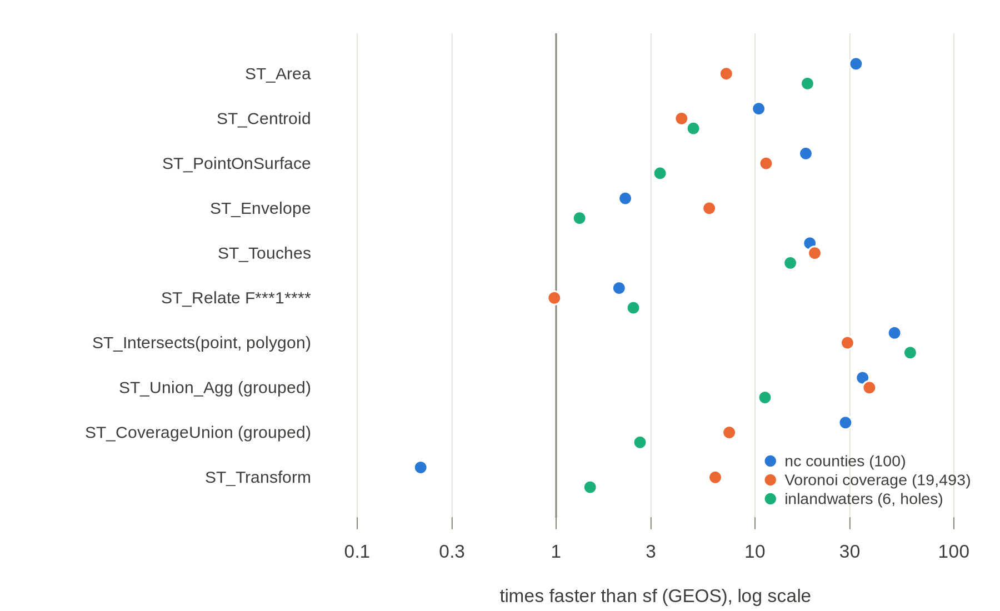

trianglewins / dev draft
ST_* functions on a triangle mesh
Development draft, 14 November 2026.
The geoarrow.triangles
proposal stores a mesh as one Arrow array: triangles that index a
shared dictionary of vertices. Asked about it, the GeoArrow side's
answer was that adoption is easier if the usual ST_*
functions are defined for it, so that users never have to think about
how the geometry is stored. This page takes that seriously. It goes
through the ST_* functions that SQL engines (PostGIS,
DuckDB spatial, SedonaDB) and sf share, and sorts each one by how it
runs on a mesh: natively, from the indices alone, with one extra index,
or by falling back to polygons and GEOS.
The idea behind the sorting is that a mesh is pre-prepared geometry. The work that GEOS does on every call, or once per prepared geometry, has already been done by the triangulation: the polygon is split into convex pieces, shared boundaries share their vertices, crossings are nodes, and what is inside is settled. Many functions become a sum or a min over triangles, and many predicates become questions about shared indices. The functions that need real geometry construction fall back to union to polygons, which is no worse than today.
A small R prototype runs ten of these functions on three layers and checks every answer against sf. The code is in survey/dev-drafts/st-mesh/. Nothing here has been proposed upstream.
The short version:
- Most of the everyday functions are native. Area, centroid, point on surface, extent, the transforms and per-triangle validity are closed forms over triangles. Point on surface is better than native: the centroid of any triangle of the feature is inside it by construction.
- Relations between features of one mesh need no coordinates. Touches, edge adjacency, overlaps, the full DE-9IM between two features, boundary, dissolve and hole counts all follow from shared vertex and edge indices, once the mesh is noded. In the prototype, touches is 15 to 20 times faster than sf and a grouped union 11 to 38 times.
- Point in polygon is a lookup. A grid of triangle
buckets and three orientation tests beat GEOS's prepared geometry by 29
to 60 times for 100,000 points, index build included. cdtr already has
this locator inside
cdt_interpolate(). - Overlay between layers is near-native. Insert both layers' edges in one constrained triangulation and label the triangles (mesh spec v0.2, Annex A). That is what polymer does, and after it intersection, union and difference are set algebra on triangle labels.
- Buffer, simplify, offset curves and distances to other geometry fall back. They construct new geometry, and the mesh gives them nothing more than clean, once-only boundaries as input.
- Feature-level functions need one more column. To
answer
ST_Area(feature)a consumer must know which triangles make up a feature. The proposal keeps that outside the type; this page argues it should be a recommended column (feature, orset_idwithset_featuresfor overlapping inputs).

What an argument is
With polygons, a geometry is a row. With
geoarrow.triangles, a row is a triangle and the array is
the mesh, so an ST_* function can mean three things:
- Per triangle.
ST_Area(tri)on each row. This is what a SQL engine would do with the type as written, and it is always native, but no user wants it on its own. - Per feature. The geometry the user thinks of: the
triangles that came from one input polygon, or one overlay piece.
ST_Area(feature)must return what it would for that polygon. This is the level that has to work for users not to care about storage. - Per mesh. Aggregates over the whole array:
ST_Extent_Agg,ST_Union_Agg.
Level 2 needs a grouping. In SQL it is a
GROUP BY feature over rows with
SUM(ST_Area(tri)), which already works with a plain feature
column. A better engine binding hides the grouping: a mesh column whose
per-feature view is a lazy geometry, materialised as a polygon only when
a function falls back. Either way the mesh must say which feature each
triangle belongs to. For a coverage (no overlaps) that is one
feature integer per triangle. For overlapping inputs it is
the v0.2 labelling: set_id per triangle and a long
set_features table, because one triangle can belong to
several features.
Tiers
| tier | meaning | reads |
|---|---|---|
| native | a closed form per triangle, then a sum, min, max or pick per feature | vertices, triangles, feature |
| combinatorial | answered from indices: shared vertices, shared edges, triangle sets. Exact whenever the noding was | triangles, feature; edges derived from triangles |
| near-native | one extra structure: a point locator, the other geometry inserted as constraints, or a clip of crossing triangles | as above, plus an index or a rebuild |
| fallback | dissolve to polygons (combinatorial, cheap) and hand them to GEOS or s2 | as for dissolve |
Combinatorial answers rest on the noding. Two features touch in the
mesh when they share a vertex id, so a vertex of one lying on the edge
of the other must have been inserted as a vertex of both. A constrained
triangulation that resolves crossings does that
(vertex_identity "noded" or
"exact" in the proposal). A mesh pooled only by exact float
matching ("exact_float") answers relations correctly only
for inputs that were already noded, as a clean coverage is.
The coverage table
Tables, in mesh spec terms: V vertices,
T triangles, F feature or
set_id + set_features, E
edges (derived from T in one sort), C
constraints, S edge_sources,
D depth. "Exists" lists implementations
that do the mesh-side work today or nearly do, in our packages and
elsewhere.
Measures and accessors
| function | tier | on the mesh | tables | exists |
|---|---|---|---|---|
ST_Area |
native | sum of triangle areas (spherical excess when edges is
spherical) |
V T F | prototype; every mesh library |
ST_Centroid |
native | area-weighted mean of triangle centroids | V T F | prototype |
ST_PointOnSurface |
native | centroid of the feature's largest triangle, inside by construction | V T F | prototype |
ST_Envelope, ST_Extent,
ST_XMin ... |
native | min and max over triangle corners; per mesh, over the dictionary | V T F | prototype; wk_envelope |
ST_Perimeter,
ST_Length(ST_Boundary(...)) |
combinatorial | sum of lengths of edges whose twin is in another feature or absent | V T F E | prototype boundary pass |
ST_NumGeometries, ST_NumInteriorRings |
combinatorial | edge-connected components; holes from the boundary walk or V - E + T per component | T F E | prototype dissolve; wkpool pool_holes() |
ST_NPoints |
combinatorial | boundary vertex count, not a triangle count | T F E | (semantic trap: count the boundary) |
ST_IsValid |
native | per triangle: non-degenerate and counter-clockwise (one orientation
test); per feature: valid by construction, with the v0.2
inconsistent_edges self-check as the reason when not |
V T, S | cdtr tests; polymer warning |
ST_IsEmpty, ST_GeometryType,
ST_Dimension |
native | no triangles; polygonal; 2 | T F | trivial |
ST_Distance(point, feature) |
near-native | 0 if the point locates in the feature, else nearest boundary edge (index the boundary edges) | V T F E | point locators below; GEOS for the edge part |
ST_MaximumInscribedCircle |
fallback | triangle incircles give a lower bound and a start | V T F | GEOS |
ST_HausdorffDistance,
ST_FrechetDistance |
fallback | GEOS |
Predicates
| function | tier | on the mesh | tables | exists |
|---|---|---|---|---|
ST_Intersects, ST_Contains,
ST_Within (point, feature) |
near-native | locate the point (grid buckets, a walk, or a tree), then the triangle's feature | V T F | prototype; cdtr cdt_interpolate() has the grid locator
inside; matplotlib TriFinder; scipy
find_simplex; d3-delaunay find; spade
locate; xugrid celltree; CGAL locate |
ST_Intersects (geometry, feature) |
near-native | candidate triangles from the locator's grid, then convex triangle tests (separating axis, segment against triangle) | V T F | GEOS prepared geometry does the polygon-side equivalent |
ST_Touches between features of one mesh |
combinatorial | features sharing a vertex id, no shared triangle | T F | prototype; wkpool find_neighbours(type = "vertex") |
ST_Relate F***1**** (share an edge) |
combinatorial | features on the two sides of a mesh edge | T F E | prototype; wkpool find_shared_edges(); the boundaries page owner table |
ST_Overlaps, ST_Covers,
ST_Equals within one mesh |
combinatorial | set relations on triangle sets via set_features |
T F | polymer index |
ST_Relate (full DE-9IM) within one mesh |
combinatorial | interiors meet if a triangle is shared; boundaries meet at shared boundary vertices (0) or edges (1); a boundary edge of A in B's interior if both its triangles are in B | T F E | none yet; worth writing as one function |
| any predicate against a geometry from outside the mesh | near-native or fallback | insert it as constraints (overlay), or locate its vertices and test crossing triangles | polymer; GEOS | |
ST_DWithin |
near-native | as ST_Distance |
Set operations and overlay
| function | tier | on the mesh | tables | exists |
|---|---|---|---|---|
ST_Union_Agg, grouped dissolve |
combinatorial | keep edges whose twin is in another group, walk them into rings by rotating around each vertex, give each ring the component of its triangles (so holes need no point-in-polygon test) | V T F | prototype mesh_dissolve_c; wkpool
tri_dissolve(); polymer fuse(); GEOS
CoverageUnion is the polygon-side analogue |
ST_Union, ST_Intersection,
ST_Difference, ST_SymDifference within one
mesh |
combinatorial | set algebra on set_features, then dissolve |
T F | polymer fuse(), layer_n() |
| the same between two layers | near-native | one constrained triangulation of both layers' edges, labelled by winding (v0.2 Annex A), then as above | V T C S | polymer on cdtr; laridae exact path in progress |
ST_ClipByBox2D, intersection with a convex polygon |
near-native | keep triangles inside, drop those outside, clip crossing triangles (convex against convex) and fan the pieces back into triangles; the result is still a mesh | V T F | not written; polyclip or a Sutherland-Hodgman loop per crossing triangle |
ST_Split (feature, line) |
near-native | insert the line as constraints, relabel the two sides | V T C S | cdtr + polymer labelling |
ST_Node, ST_Polygonize |
native to the producer | a constrained triangulation resolves crossings
(intersect = "resolve"), and depth or labelling gives the
faces |
V T C D | cdtr, laridae, wkpool find_faces() |
ST_MakeValid |
native to the producer | the labelled mesh is the repaired polygon under its fill rule (even-odd or non-zero, see validity) | V T D or F | polymer rule =; cdtr depth |
Processing and construction
| function | tier | on the mesh | tables | exists |
|---|---|---|---|---|
ST_Boundary |
combinatorial | boundary edges as lines, each drawn once | V T F E | prototype mesh_boundary_c; wkpool arcs |
ST_ConvexHull |
near-native | hull of the feature's vertices; for an unerased Delaunay mesh, its outer boundary | V T F | any hull |
ST_DelaunayTriangles,
ST_ConstrainedDelaunayTriangles,
ST_TriangulatePolygon |
native | the identity: the triangles are the answer, without the GEOMETRYCOLLECTION | V T | cdtr, laridae, GEOS 3.10+ produces the polygon form |
ST_VoronoiPolygons |
near-native | dual of a Delaunay mesh from circumcentres; a constrained mesh is not Delaunay across constraints | V T E | d3-delaunay voronoi; GEOS |
ST_Subdivide |
native | the mesh is already subdivided into convex pieces; group triangles into chunks along a space-filling curve if bigger pieces are wanted | V T F | |
ST_Segmentize |
near-native, different rule | split boundary edges at a length (constraint edge splits) or refine by area | V T C | cdtr max_area, laridae refinement |
ST_SnapToGrid, ST_ReducePrecision |
near-native | edit the dictionary, then re-check every triangle's orientation and repair flips locally | V T | the vertex identity ladder |
ST_Simplify, ST_SimplifyPreserveTopology,
ST_CoverageSimplify |
fallback | the mesh supplies each shared boundary once as an arc, which is the input a coverage simplifier wants | V T F E | GEOS CoverageSimplifyVW; wkpool
find_arcs() |
ST_Buffer, ST_OffsetCurve,
ST_ConcaveHull,
ST_MinimumRotatedRectangle |
fallback | GEOS |
Transforms and I/O
| function | tier | on the mesh | tables | exists |
|---|---|---|---|---|
ST_Transform, ST_Affine,
ST_Translate, ST_Scale,
ST_FlipCoordinates |
native | transform the dictionary only; then a cheap check that no triangle changed orientation (a reflection flips all; a fold or a cut shows as a mix) | V, T for the check | prototype; bigcurve when edges are geodesic |
ST_SetSRID, ST_Force2D,
ST_Force3D |
native | metadata, or a z column on the vertex table | V | |
ST_AsBinary, ST_AsText per triangle |
native | WKB TRIANGLE, or the mesh as TIN |
V T | wk reads TIN as MULTIPOLYGON on the read-surface-types
branch (wk#236) |
ST_AsBinary, ST_AsGeoJSON per feature |
combinatorial | dissolve, then write the polygon | V T F | as dissolve |
ST_GeomFromWKB of TIN, polygons to a
mesh |
producer | repool vertices by exact match and triangulate | wkpool merge_coincident(); cdtr; laridae |
Beyond the SQL list
A mesh also answers questions that have no ST_* name,
and these are often the reason to have a mesh at all: linear
interpolation of a vertex value at points (cdtr
cdt_interpolate(), matplotlib
LinearTriInterpolator), exact rasterisation (each triangle
burns a convex footprint; controlledburn does the polygon-edge version),
area weighted regridding between two meshes (xugrid, and the overlay
above), and drawing (every renderer triangulates polygons anyway;
deck.gl runs earcut on each one).
Prototype
st_mesh.R implements ten functions on a mesh built by
polymer (which triangulates with cdtr and labels with Annex A). All ten
are written in vectorised base R, and the four grouped loops (extent,
touches, point location, dissolve) are also written in about 250 lines
of C++ (st_mesh.cpp, loaded with
cpp11::cpp_source()), so that the comparison with sf, which
calls GEOS in C++, is of algorithms rather than of R against C++.
bench.R runs both against sf on three layers and checks
every answer:
| layer | features | polygon coordinates | mesh vertices | triangles | build (s) |
|---|---|---|---|---|---|
| nc counties | 100 | 2,529 | 1,255 | 2,205 | 0.04 |
| Voronoi coverage | 19,493 | 136,260 | 39,478 | 77,781 | 0.64 |
| inlandwaters (holes) | 6 | 33,644 | 30,835 | 33,205 | 0.19 |
The Voronoi layer is whole Voronoi cells of 20,000 random points, so
its shared edges are exact. Every check passed: areas agree with sf to
1.5e-13 (relative), centroids to 1e-15, every point on surface lies in
its own feature, extents are identical, the touches and edge-neighbour
lists are identical to st_touches() and
st_relate(pattern = "F***1****"), all 100,000 points land
in the same feature as st_intersects(), and the dissolved
polygons have zero symmetric difference with st_union() and
are valid.

Median times in milliseconds (R, C++ where written, sf):
| function | nc | Voronoi | inlandwaters |
|---|---|---|---|
ST_Area |
0.2, -, 5.6 | 9.6, -, 69 | 1.4, -, 25 |
ST_Centroid |
0.2, -, 2.6 | 35, -, 148 | 3.2, -, 16 |
ST_PointOnSurface |
0.1, -, 2.5 | 10, -, 114 | 3.8, -, 13 |
ST_Envelope |
1.0, 0.05, 0.1 | 159, 3.1, 18 | 25, 0.3, 0.4 |
ST_Touches |
12, 0.5, 9.6 | 1,738, 40, 799 | 185, 5.0, 76 |
ST_Relate F***1**** |
4.9, -, 10 | 728, -, 713 | 28, -, 67 |
ST_Intersects(point, polygon), 100,000 points |
334, 6.1, 306 | 383, 21, 597 | 365, 6.6, 397 |
ST_Union_Agg, grouped |
9.0, 1.1, 39 | 1,067, 21, 778 | 705, 12, 137 |
ST_CoverageUnion, grouped |
7.2, 0.8, 23 | 1,129, 21, 159 | 504, 11, 28 |
ST_Transform to EPSG:4326 |
15, -, 3.1 | 35, -, 222 | 12, -, 17 |
What the numbers say:
- The algorithms are linear and short. Each native or combinatorial function is one pass over the triangles, or one sort of their edges. The C++ for touches is about 30 lines, point location about 50 and the dissolve walk about 80.
- The sf column includes converting to GEOS on every call. That is a real cost for an sf user, and it is exactly the cost a mesh column avoids, but it means part of the gap is not GEOS's algorithm.
- GEOS's coverage union already does what the mesh does. It matches shared edges instead of overlaying, which is why it is 5 times faster than ordinary union on the Voronoi and inlandwaters layers, and why the mesh's lead over it shrinks to 2.6 to 28 times. It is the clearest case of a polygon-side method that is mesh-shaped already.
- Transform depends on vertex sharing. On the Voronoi
coverage every vertex is shared by about three cells, so the mesh
projects 39,478 points instead of 136,260, and is 6 times faster. On nc
the fixed cost of building the PROJ pipeline dominates and the mesh
path, through
sf_project(), is slower; inlandwaters has almost no shared vertices. - Build cost is the price of preparation. Building
the mesh took 0.04 to 0.64 s, about one or two calls of the slower sf
functions. It is paid once, by the producer, and travels with the data;
a file of
geoarrow.trianglesarrives prepared. - Pure R is not enough for the grouped loops. Touches, extent and dissolve in vectorised R are slower than sf on the larger layers. Any real binding would sit in C, C++ or Rust, next to the storage.
Not measured: overlay between two layers (polymer's own benchmarks cover that), clip by box, and the spherical case.
What this suggests for the proposal
- Recommend a feature column. Feature-level functions
are the ones users call, and they need to know which triangles form a
feature. Add
feature: int32per triangle (coverage) and the v0.2set_idplusset_features(overlapping inputs) to "Conventions outside the type". - Say what
vertex_identitybuys. The combinatorial tier is exact only at"noded"or"exact". That is a concrete reason for the key, which open question 2 of the proposal asks for. - Counter-clockwise should be a must, or flagged. Point location, validity and the dissolve walk all assume it; a consumer that cannot trust it must test every triangle first (cheap, but a pass).
- An
ST_*binding is mostly a dissolve plus sums. A first implementation in any engine needs: per-triangle closed forms, a group reduction, a point locator and the dissolve walk. Everything else can fall back through the dissolve.
Possible next steps
All on our side first:
- Expose cdtr's grid locator as
cdt_locate()returning triangle ids (about ten lines over the code already incdt_interpolate()). - Move the dissolve walk into wkpool's
tri_dissolve()as compiled code; the prototype's pinch handling and hole assignment by component carry over. - Write a full DE-9IM for two features of one mesh, checked against
st_relate()on the conformance corpus. - Try clip by box as a mesh-to-mesh function, and the spherical tier with s2's predicates.
- Sketch what a SedonaDB or DuckDB function over a
geoarrow.trianglescolumn plus a feature column would look like, without proposing it.